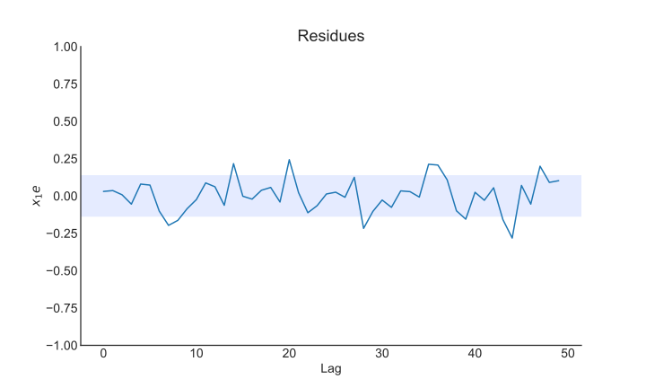
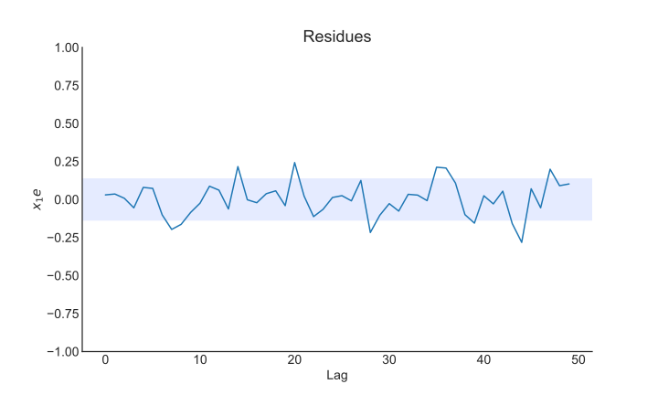

User Guide
Conteúdo
User Guide¶
Presenting main functionality¶
Example created by Wilson Rocha Lacerda Junior
Here we import the NARMAX model, the metric for model evaluation and the methods to generate sample data for tests. Also, we import pandas for specific usage.
import numpy as np
import pandas as pd
import matplotlib.pyplot as plt
from sysidentpy.model_structure_selection import FROLS
from sysidentpy.basis_function import Polynomial, Fourier
from sysidentpy.metrics import root_relative_squared_error
from sysidentpy.utils.generate_data import get_siso_data
from sysidentpy.utils.display_results import results
from sysidentpy.utils.plotting import plot_residues_correlation, plot_results
from sysidentpy.residues.residues_correlation import compute_residues_autocorrelation, compute_cross_correlation
Generating 1 input 1 output sample data¶
The data is generated by simulating the following model:
\(y_k = 0.2y_{k-1} + 0.1y_{k-1}x_{k-1} + 0.9x_{k-1} + e_{k}\)
If colored_noise is set to True:
\(e_{k} = 0.8\nu_{k-1} + \nu_{k}\)
where \(x\) is a uniformly distributed random variable and \(\nu\) is a gaussian distributed variable with \(\mu=0\) and \(\sigma=0.1\)
In the next example we will generate a data with 1000 samples with white noise and selecting 90% of the data to train the model.
x_train, x_valid, y_train, y_valid = get_siso_data(n=1000,
colored_noise=False,
sigma=0.001,
train_percentage=90)
To obtain a NARMAX model we have to choose some values, e.g, the nonlinearity degree (degree), the maximum lag for the inputs and output (xlag and ylag).
In addition, you can select the information criteria to be used with the Error Reduction Ratio to select the model order and the method to estimate the model parameters:
Information Criteria: aic, bic, lilc, fpe
Parameter Estimation: least_squares, total_least_squares, recursive_least_squares, least_mean_squares and many other (see the docs)
The n_terms values is optional. It refer to the number of terms to
included in the final model. You can set this value based on the
information criteria (see below) or based on priori information about
the model structure. The default value is n_terms=None, so the
algorithm will choose the minimum value reached by the information
criteria.
To use information criteria you have to set order_selection=True. You
can also select n_info_values (default = 15).
basis_function = Polynomial(degree=2)
model = FROLS(
basis_function=basis_function,
order_selection=True,
n_info_values=10,
extended_least_squares=False,
ylag=2, xlag=2,
info_criteria='aic',
estimator='least_squares',
)
The fit method executes the Error Reduction Ratio algorithm using Householder reflection to select the model structure.
model.fit(X=x_train, y=y_train)
<sysidentpy.polynomial_basis.narmax.PolynomialNarmax at 0x7f332d0cc490>
The predict method is use to generate the predictions. We support free run simulation (also known as infinity steps ahead), one-step ahead and n-steps ahead prediction.
Note: Free run simulation means that the y values used for predictions are the ones predicted in previous iterations. In one-step ahead simulation, otherwise, the y values used are the observed values of the system. In k-steps ahead, the y values are the predicted values but at each k iterations the observed values are used.
yhat = model.predict(X=x_valid, y=y_valid)
In this example we use the root_relative_squared_error metric because it is often used in System Identification. More metrics and information about it can be found on documentation.
rrse = root_relative_squared_error(y_valid, yhat)
print(rrse)
0.0018758031321337446
model_object.results return the selected model regressors, the estimated parameters and the ERR values. As shown below, the algorithm detect the exact model that was used for simulate the data.
r = pd.DataFrame(
results(
model.final_model, model.theta, model.err,
model.n_terms, err_precision=8, dtype='sci'
),
columns=['Regressors', 'Parameters', 'ERR'])
print(r)
Regressors Parameters ERR
0 u1(k-2) 0.9001 0.95750813
1 y(k-1) 0.2000 0.03916822
2 u1(k-1)y(k-1) 0.1003 0.00332022
In addition, you can access the residuals analysis and plot_result methods to take a look at the prediction and residual analysis.
plot_results(y=y_valid, yhat = yhat, n=1000)
ee = compute_residues_autocorrelation(y_valid, yhat)
plot_residues_correlation(data=ee, title="Residues", ylabel="$e^2$")
x1e = compute_cross_correlation(y_valid, yhat, x_valid)
plot_residues_correlation(data=x1e, title="Residues", ylabel="$x_1e$")

 
In the example above we let the number of terms to compose the final model to be defined as the minimum value of the information criteria. Once you ran the algorithm and choose the best number of parameters, you can turn order_selection to False and set the n_terms value (3 in this example). Here we have a small dataset, but in bigger data this can be critical because running information criteria algorithm is more computational expensive. Since we already know the best number of regressor, we set n_terms and we get the same result.
However, this is not only critical because computational efficiency. In many situation, the minimum value of the information criteria can lead to over fitting. In some cases, the difference between choosing a model with 30 regressors or 10 is minimal, so you can take the model with 10 terms without loosing accuracy.
In the following we use info_values to plot the information criteria values. As you can see, the minimum value relies where \(xaxis = 5\)
xaxis = np.arange(1, model.n_info_values + 1)
plt.plot(xaxis, model.info_values)
plt.xlabel('n_terms')
plt.ylabel('Information Criteria')
Text(0, 0.5, 'Information Criteria')

Important Note:¶
Here we are creating random samples with white noise and letting the algorithm choose the number of terms based on the minimum value of information criteria. This is not the best approach in System Identification, but serves as a simple example. The information criteria must be used as an auxiliary tool to select n_terms. Plot the information values to help you on that!
If you run the example above several times you might find some cases where the algorithm choose only the first two regressors, or four (depending on the information criteria method selected). This is because the minimum value of information criteria depends on residual variance (affected by noise) and have some limitations in nonlinear scenarios. However, if you check the ERR values (robust to noise) you will see that the ERR is ordering the regressors in the correct way!
We have some examples on information_criteria notebook!
The n_info_values limits the number of regressors to apply the information criteria. We choose \(n_y = n_x = \ell = 2\), so the candidate regressor is a list of 15 regressors. We can set n_info_values = 15 and see the information values for all regressors. This option can save some amount of computational resources when dealing with multiples inputs and large datasets.
basis_function = Polynomial(degree=2)
model = FROLS(
basis_function=basis_function,
order_selection=True,
n_info_values=15,
extended_least_squares=False,
ylag=2, xlag=2,
info_criteria='aic',
estimator='least_squares',
)
model.fit(X=x_train, y=y_train)
xaxis = np.arange(1, model.n_info_values + 1)
plt.plot(xaxis, model.info_values)
plt.xlabel('n_terms')
plt.ylabel('Information Criteria')
Text(0, 0.5, 'Information Criteria')

Now running without executing information criteria methods (setting the n_terms) because we already know the optimal number of regressors
basis_function = Polynomial(degree=2)
model = FROLS(
basis_function=basis_function,
# order_selection=True,
n_terms = 3,
# n_info_values=15,
extended_least_squares=False,
ylag=2, xlag=2,
info_criteria='aic',
estimator='least_squares',
)
model.fit(X=x_train, y=y_train)
yhat = model.predict(X=x_valid, y=y_valid)
rrse = root_relative_squared_error(y_valid, yhat)
print('rrse: ', rrse)
r = pd.DataFrame(
results(
model.final_model, model.theta, model.err,
model.n_terms, err_precision=8, dtype='sci'
),
columns=['Regressors', 'Parameters', 'ERR'])
print(r)
rrse: 0.0018758031321337446
Regressors Parameters ERR
0 u1(k-2) 0.9001 0.95750813
1 y(k-1) 0.2000 0.03916822
2 u1(k-1)y(k-1) 0.1003 0.00332022
You can access some extra information like the list of all candidate regressors
# for now the list is returned as a codification. Here, $0$ is the constant term, $[1001]=y{k-1}, [100n]=y_{k-n}, [200n] = x1_{k-n}, [300n]=x2_{k-n}$ and so on
model.regressor_code # list of all possible regressors given non_degree, n_y and n_x values
array([[ 0, 0],
[1001, 0],
[1002, 0],
[2001, 0],
[2002, 0],
[1001, 1001],
[1002, 1001],
[2001, 1001],
[2002, 1001],
[1002, 1002],
[2001, 1002],
[2002, 1002],
[2001, 2001],
[2002, 2001],
[2002, 2002]])
print(model.err, '\n\n') # err values for the selected terms
print(model.theta) # estimated parameters for the final model structure
[0.95750813 0.03916822 0.00332022 0. 0. 0.
0. 0. 0. 0. 0. 0.
0. 0. 0. ]
[[0.90008672]
[0.19998879]
[0.10026928]]